都说时尚圈的趋势瞬息万变
从优雅风到中性风
衣柜里的衣服还没捂热呢
最近又被一股“BM风”深深吸引了~
所谓的 BM风
其实是Brandy Melville的缩写
是一个来自意大利的少女品牌
它的特点就是： 短款、紧身、露腰
以Crop Top上衣为主打
搭配格纹短裙或者休闲裤
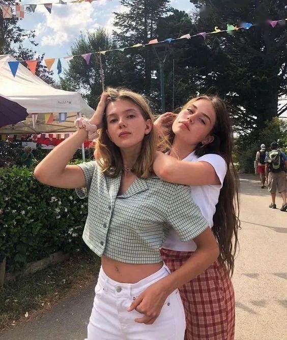
BM风=瘦女孩专属？
其实和大骨架敌对的BM风
只要穿对了所有人都适合
选择经典的Crop top单品
利用腰线来拉长身材比例
显瘦显高的同时超好搭配哦~
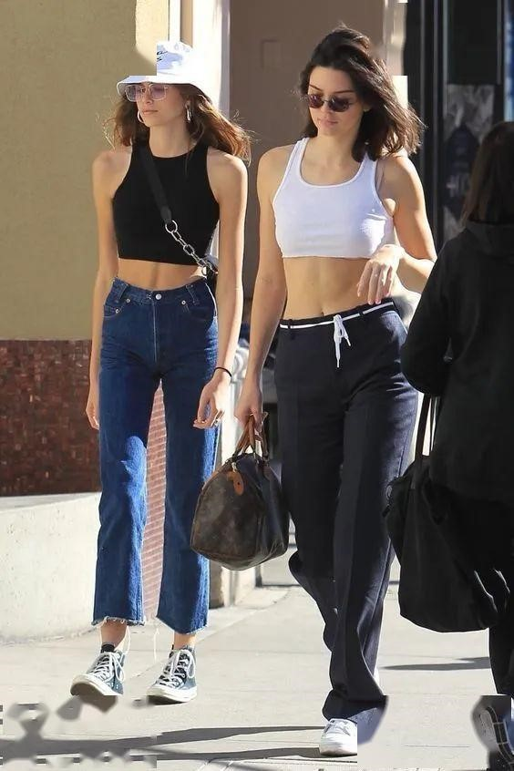
Crop top上衣怎么选？
露脐装的选择有很多
但是想要利用它来打造出BM风格
颜色一定要选对
明亮的浅色系最适合春天了
不仅拍照上镜
还带有十足的少女感
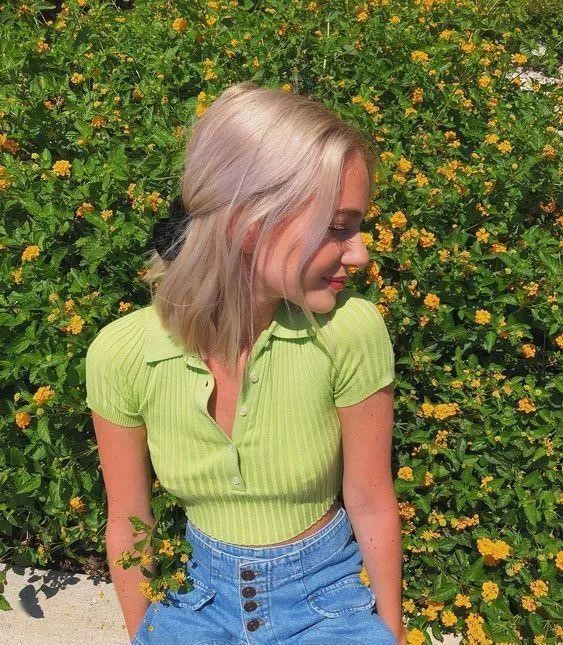
嫩绿色、珊红色
都带有一定的饱和度
上身显白又元气满满
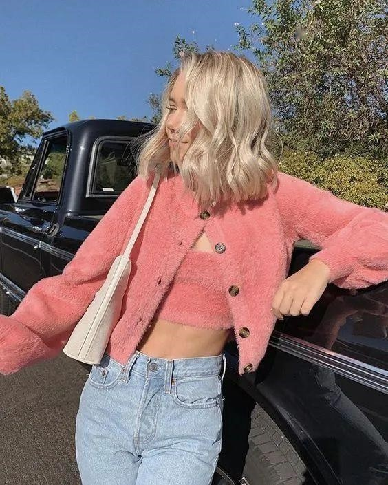
还有今年大火的淡紫色
一套上身也是非常BM风~
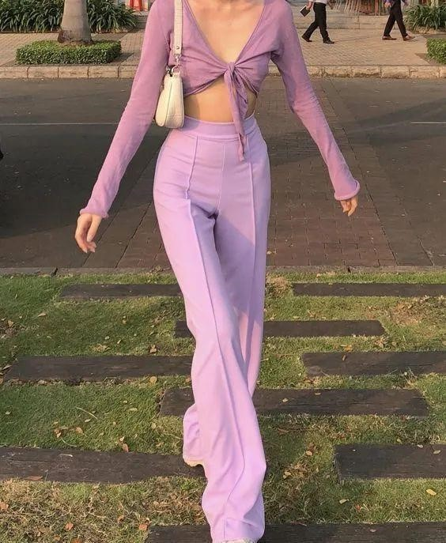
Crop top怎么搭配？
1、Crop top+格纹半裙
经典的苏格兰纹不仅是校园风的代表
现在还是BM风的典型元素之一
搭配一件纯色小短款
瞬间化身时髦cool girl！
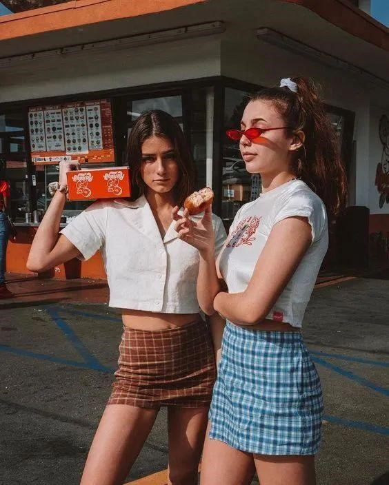
A型短裙最显腿长
裙边再加一点小开衩设计
甜系少女也有性感的一面~
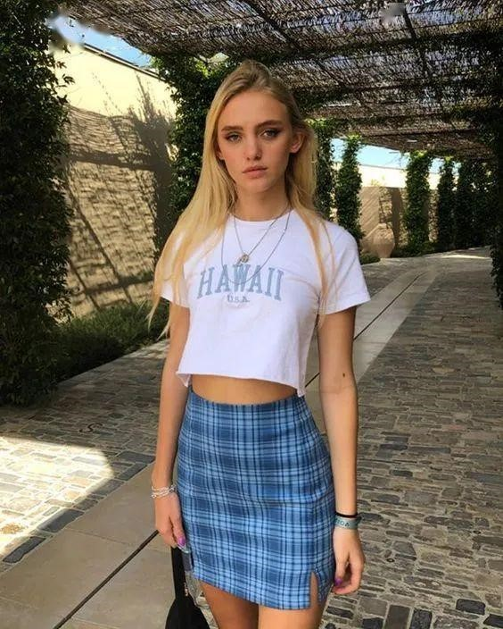
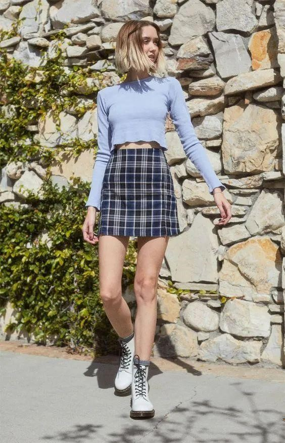
在颜色搭配上
利用同色系上衣搭配格纹小短裙
还增加了几分高级感
绝对不会有“廉价”的感觉
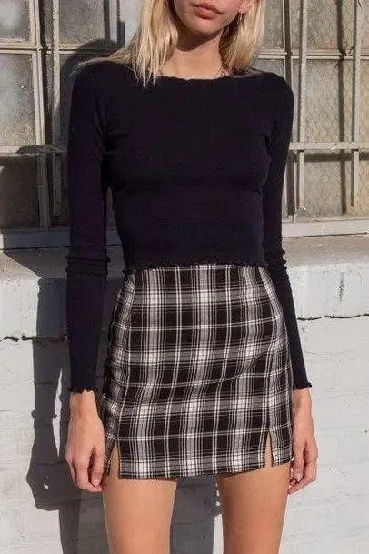
还有一点搭配小建议
想要让造型更减龄
可以选一双中筒的白色棉袜
搭配小白鞋穿出青春少女风
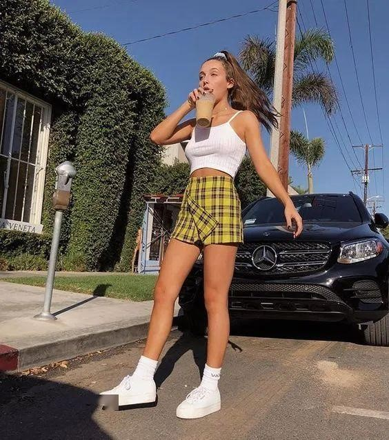
2、Crop top+运动束脚裤
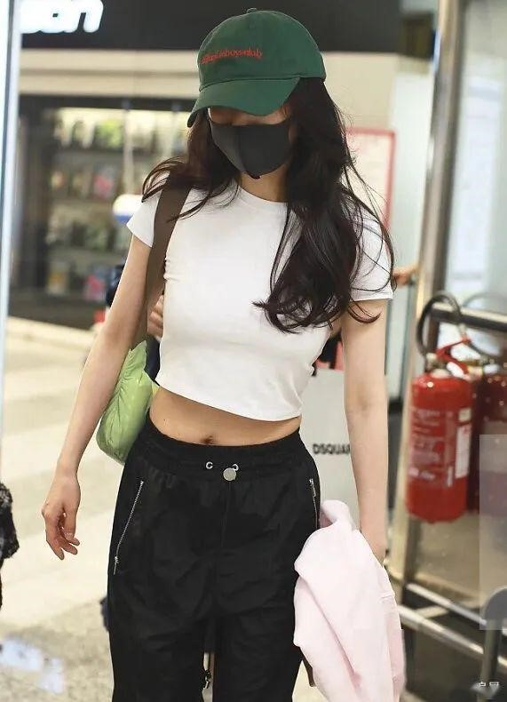
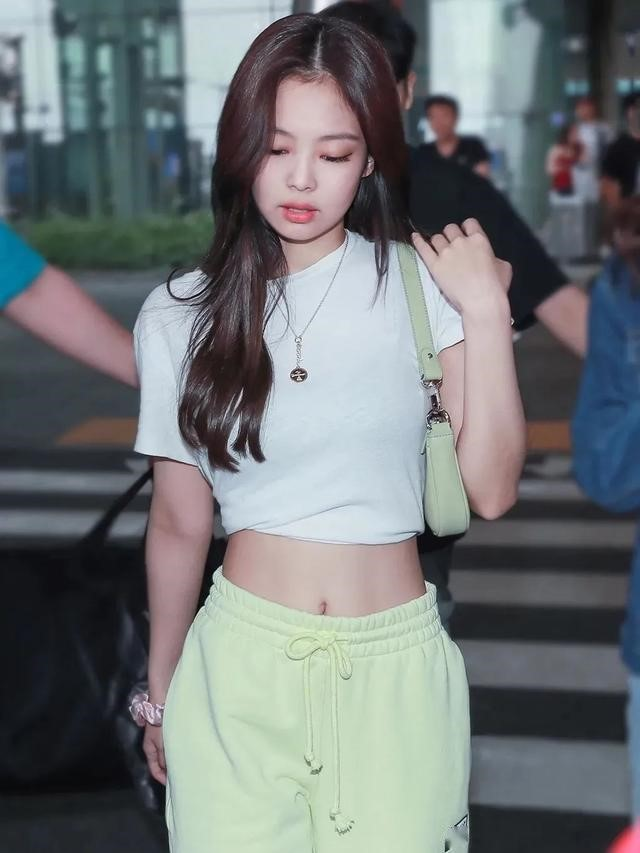
宽松的裤型不挑身材穿着
胯宽、腿粗的女生们放心大胆的穿～
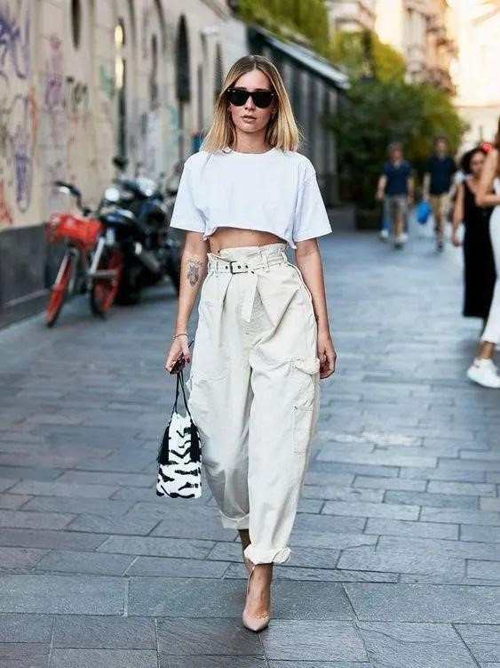
3、Crop top+牛仔阔腿裤
经典的蓝色直筒牛仔裤作为时髦单品之一
永远都不会缺席～
用它来搭配短款上装
在视觉上拉长身材比例
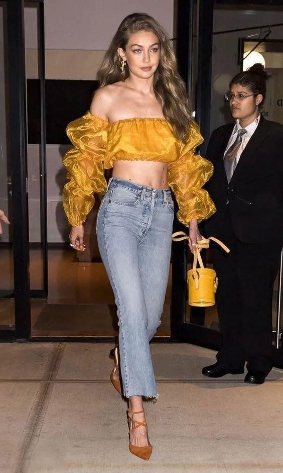
上短下长、上窄下宽的搭配方法
很好的平衡了整套look
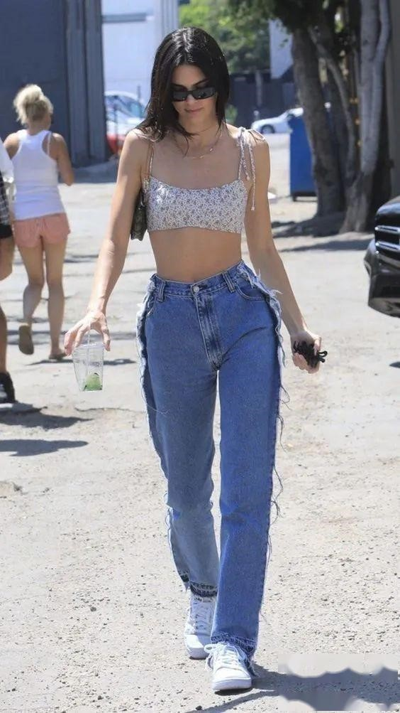
清爽的蓝色牛仔充满活力
和各种彩色的小开衫搭配都非常抢眼
走在街上让你收获超高回头率
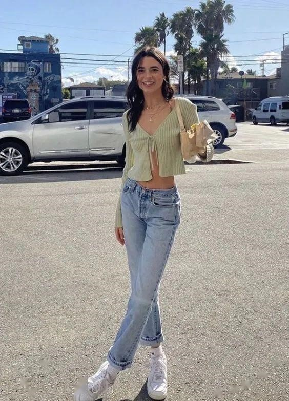
牛仔裤的版型不宜过瘦
略微宽松更有街头时髦感
浅蓝色调搭配白色小衫
是夏天的感觉没错了～
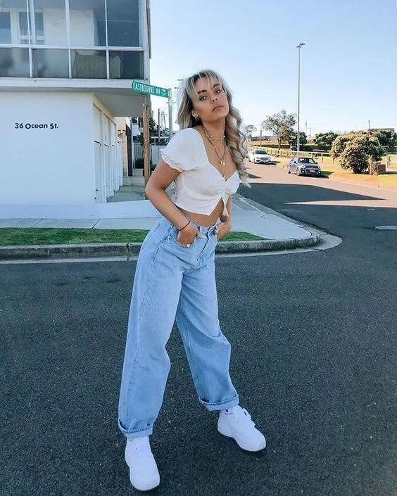
深蓝色牛仔裤更显复古
搭配小碎花短袖瞬间增加了几分文艺气质
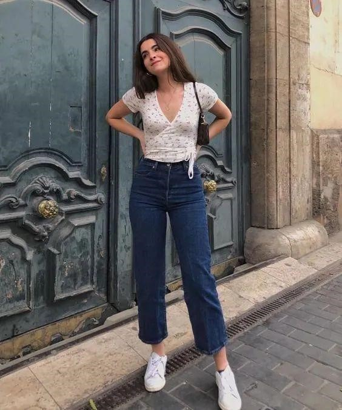